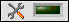

The Tools palette contains the following tools, which you use to operate and modify front panel and block diagram objects.
|  | Automatic Tool Selection—If automatic tool selection is enabled and you move the cursor over objects on the front panel or block diagram, LabVIEW automatically selects the corresponding tool from the Tools palette. You can disable automatic tool selection and select a tool manually. |
| Operating—Changes the value of a control. |
| Positioning—Positions, resizes, and selects objects. |
| Labeling—Creates free labels and captions, edits existing labels and captions, or selects the text within a control. |
| Wiring—Wires objects together on the block diagram. |
| Object Shortcut Menu—Opens the shortcut menu of an object. |
| Scrolling—Scrolls the window without using the scroll bars. |
|
Breakpoint—Sets breakpoints on VIs, functions, nodes, wires, structures, and (MathScript RT Module) lines of script in a MathScript Node to pause execution at that location. |
 |
Probe—Creates probes on wires or (MathScript RT Module) MathScript Nodes. Use the Probe tool to check intermediate values in a VI that produces questionable or unexpected results. |
| Get Color—Copies colors for pasting with the Coloring tool. |
| Coloring—Sets the foreground and background colors. |